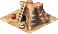
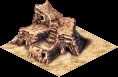

Huts

Huts are the two lowest housing tiers — the first roofs immigrants raise when they walk in from the kingdom road. A player never places a hut directly: a vacant lot with road access becomes a Crude Hut the moment the first family moves in, and from there the house evolves on its own as services reach it.
Huts ask for almost nothing — the Crude Hut needs no water, food, or goods at all, and the Sturdy Hut adds only a water source. In exchange they hold very few people, pay little tax, and lower the desirability of everything around them, so a city of bare huts struggles to grow. They are a starting point to be grown out of, not a goal.
Crude Hut · tier 1
- Water
- None required
- Food / Goods
- None
- Evolves at
- Desirability ≥ −10
- Merges
- Yes → 2×2 block
- Fire / Damage
- Moderate / None
Sturdy Hut · tier 2
- Water
- Well (water access)
- Food / Goods
- None
- Evolves at
- Desirability ≥ −5
- Devolves below
- Desirability −12
- Fire / Damage
- Moderate / None
Overview
In the housing ladder Pharaoh tracks twenty tiers, the two hut tiers sit right at the bottom, below the shanties. They are the housing every city starts with and the housing a neglected district falls back to. Both are 1×1 plots that can merge into a single 2×2 block once four adjacent plots of the same tier qualify for the next step up — a merged hut block packs four times the residents into one footprint.
Huts are pure worker housing: every resident counts toward the city's labour pool, feeding nearby farms, quarries, and workshops. Their downside is desirability — a hut radiates a small negative influence (−2 at the tile, fading over three tiles), so a dense field of huts holds itself down and makes it harder for any one plot to reach the desirability it needs to evolve. Breaking that deadlock with a few gardens, a well, and the first roaming services is the earliest growth puzzle of every mission.
Structures

Crude Hut
The starting roof. A vacant lot turns into a Crude Hut as soon as it has a road within two tiles and an immigrant arrives. It demands nothing — no water, no food, no goods, no services — so it will appear and survive anywhere a road reaches, but it also holds only 5 people and contributes very little tax. It cannot devolve any further; it is the floor of the housing ladder. To advance to a Sturdy Hut it needs the tile desirability to climb to −10 or better, which usually means simply not crowding it with other huts and undesirable industry.
Sturdy Hut
The second tier. A Sturdy Hut holds 7 people and adds one requirement over the Crude Hut: water access, satisfied by a Well whose water carrier (or coverage) reaches the house. Lose that water and the house slides back to a Crude Hut once desirability falls below −12. With desirability of −5 or better and its water kept up, a Sturdy Hut evolves into a Meager Shanty — the first tier that begins asking for food and bazaar goods. Sturdy Huts cannot be placed directly; they only ever arise by evolution from a Crude Hut.
Evolution & devolution
Like every house, a hut is re-evaluated at regular intervals against the requirements of the tier above it. Three things decide whether it climbs or slips:
- Desirability — the tile score from surrounding buildings. A Crude Hut needs ≥ −10 to become a Sturdy Hut; a Sturdy Hut needs ≥ −5 to become a Meager Shanty. Gardens, a well, plazas, and keeping industry and other huts at arm's length all push the number up.
- Water — irrelevant to the Crude Hut, but a Sturdy Hut must have a water source within reach. This is the single most common reason an early district stalls at Crude Huts.
- Reachability — the house must stay connected to the road network. A hut cut off from roads for too long is flagged unreachable and will devolve.
Vacant Lot → immigrant arrives → Crude Hut → desirability ≥ −10 → Sturdy Hut → desirability ≥ −5 & water → Meager Shanty
Devolution runs the chain in reverse after a short grace period (the hut's devolve delay). Because the Crude Hut has no requirements, it is the safe floor: a district stripped of water or services collapses no lower than bare Crude Huts rather than vanishing.
Tips
- Don't fight the huts — grow out of them. A field of Crude Huts holds its own desirability down. A single Well plus a couple of gardens is usually enough to tip the first plots up to Sturdy Huts and start the chain.
- Water is the Sturdy-Hut gate. If an early district refuses to climb past Crude Huts, check that a well's coverage actually reaches the houses — proximity alone is not enough.
- Huts are your workforce. Every hut resident feeds the labour pool. In the opening of a mission you usually want plenty of huts near your first farms and workshops; refine them into higher housing only once basic industry is staffed.
- Mind the fire risk. Huts carry a moderate fire risk that only rises through the early-to-mid tiers — keep a firehouse near any dense hut cluster.
- Let them merge. Leave room for 1×1 huts to combine into 2×2 blocks; a merged block houses far more people on the same ground once it qualifies to evolve.
Developer reference
All paths relative to the repository root. Model arrays are indexed by difficulty: Very Easy · Easy · Normal · Hard · Very Hard. Player-facing values above use the Normal (index 2) column.
House config — src/scripts/houses.js
src/scripts/houses.js defines both hut tiers. building_house_crude_hut carries a cost array (the cost of placing the starting plot); building_house_sturdy_hut has none because it only arises by evolution. The model block holds the per-tier evolution thresholds, capacity, and risk curves.
building_house_crude_hut {
building_size : 1
can_merge : true
desirability { value[-2], step[1], step_size[1], range[3] }
laborers[0]
cost [ 5, 10, 20, 40, 50 ]
fire_risk[3] damage_risk[0]
model {
evolve_desirability[-10,-10,-10,-10,-10]
devolve_desirability[-99,-99,-99,-99,-99] // floor — never devolves
water[0,0,0,0,0] // no water needed
max_people[5,5,5,5,5]
food_types[0,0,0,0,0]
}
meta { help_id: 128, text_id: -1 }
flags { is_house: true }
}
building_house_sturdy_hut {
building_size : 1
can_merge : true
desirability { value[-2], step[1], step_size[1], range[3] }
fire_risk[3] damage_risk[0]
model {
evolve_desirability[-7,-6,-5,-5,-5]
devolve_desirability[-12,-12,-12,-12,-12]
water[1,1,1,1,1] // requires a water source
max_people[7,7,7,7,7]
food_types[0,0,0,0,0]
}
flags { is_house: true }
}The hut sprites are atlas PACK_GENERAL id 26 (offsets 0–1 Crude, 2–3 Sturdy; offsets 4–5 are the merged 2×2 variants).
Evolution logic — src/building/building_house.cpp
House evolution and devolution is driven by src/building/building_house.cpp, which each cycle compares the tile's accumulated desirability against the current tier's evolve_desirability / devolve_desirability and checks the required service levels (here only water for the Sturdy Hut). When all conditions for the next tier hold it promotes the house type; when a requirement lapses past the devolve_delay it demotes. Merging of four 1×1 plots into a 2×2 block uses can_merge and the variants_merged sprite set defined in houses.js.